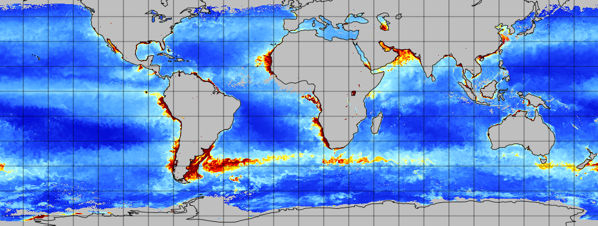

VIIRS-based Primary Productivity Products
Replacing the Legacy MODIS-based Products

Project Overview
Since 2007, the only satellite product available from NOAA for monitoring primary productivity has been the global product developed by the NOAA CoastWatch West Coast Node. The product is based on the Vertically Generalized Production Model (VPGM) described by Behrenfeld and Falkowski (1997) and relies on data from the MODIS sensor on the Aqua satellite to drive the algorithm. The MODIS Aqua sensor will be decommissioned soon, effectively ending this legacy MODIS-based primary productivity product. New primary productivity algorithms that use the latest satellite sensors are under development, but are unlikely to be in production before MODIS Aqua is retired.
Interim products are required to address the needs of users for primary productivity data during the gap between the loss of the legacy MODIS primary productivity and the availability of the new generation primary productivity products. The NOAA CoastWatch was funded to produce the interim products.
Project Goals
Our group was funded to create two interim primary productivity products. The products use the Behrenfeld and Falkowski VPGM, but are driven by newer generation satellite data.
- A product based on data from the VIIRS SNPP sensor – The SNPP VIRS data provides a product time series that extends back to 2012;
- A product based on the VIIRS NOAA-20 sensor, to ensure the future availability of an interim product until a new generation product is available.
An important objective of the project was for the interim products to yield results that are similar to those generated by the legacy products, facilitating easy transitions by users to the interim product that require fewer resources for recalibrating their application. A comprehensive statistical evaluation was applied to both interim product lines to document their similarities to the legacy product. On a global level, both product lines yielded results similar to those of the legacy MODIS product. The detailed results and statistical methods can be found on the Statistical Analysis page. Users interested in conducting a statistical analyses tailored to their region of interest will find Python and R notebooks on the User Resources page that will guide them through the process.
The Importance of Primary Productivity
Primary productivity in marine surface waters is primarily the rate at which phytoplankton convert light energy into chemical energy stored as carbon biomass via the process of photosynthesis. Primary productivity forms the base of the marine food web, supplying higher trophic levels and microbial food webs with an energy and carbon source. It also contributes to the release oxygen and uptake of carbon dioxide in the ocean and atmosphere, and plays a crucial role in the global carbon cycle. Therefore, monitoring primary productivity is important for studying marine ecosystems, managing fisheries, and understanding global biogeochemical cycling.
Download Interim Product Data
The two interim products lines are routinely produced and are available online as daily and monthly composites via the West Coast Node ERDDAP data server.
Project Team and Funding
The project team included Dale Robinson, Cara Wilson, Sunny Hospital, Veronica Lance, Johnathon Sherman, Ryan Rykaczewski, Andrea Vander Woude, Menghua Wang, and Melanie Abecassis associated with NOAA CoastWatch; Kim Hyde from NOAA Southeast Fisheries Science Center; and Ryan Vandermeulen from the NOAA National Marine Fisheries Service.
A special thanks to Jesse Espinoza and Madison Richardson who made important contributions to the project including helping to generate the production Python code, produce the primary productivity products and develop the web presence.
The project was supported by funding from the Portfolio Management Branch of NESDIS, NOAA CoastWatch, and CSU COAST.